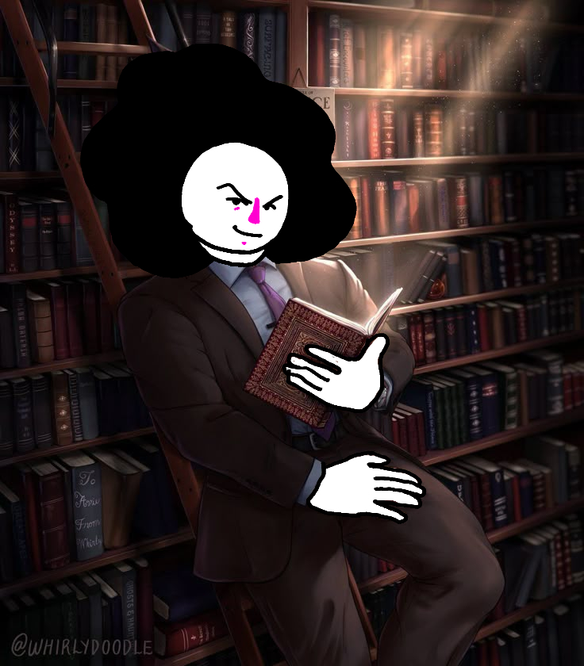
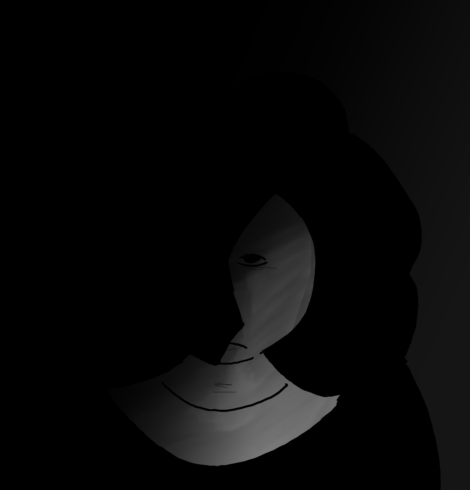
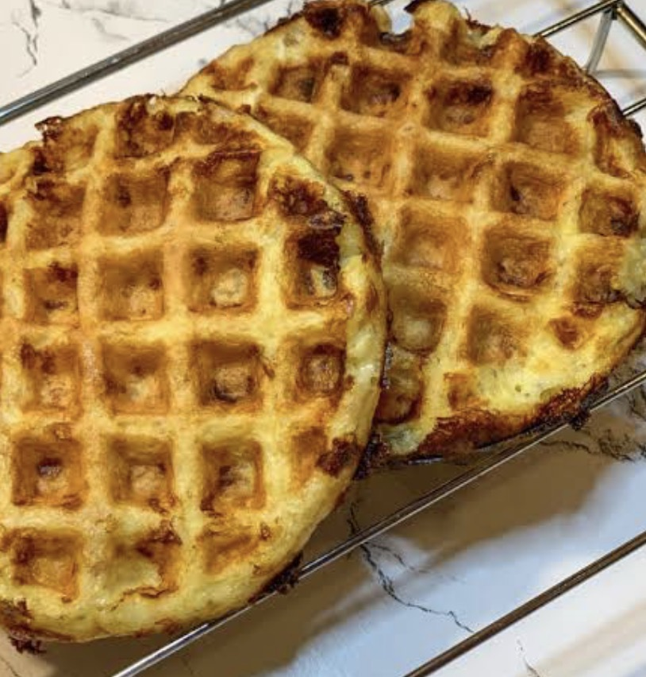
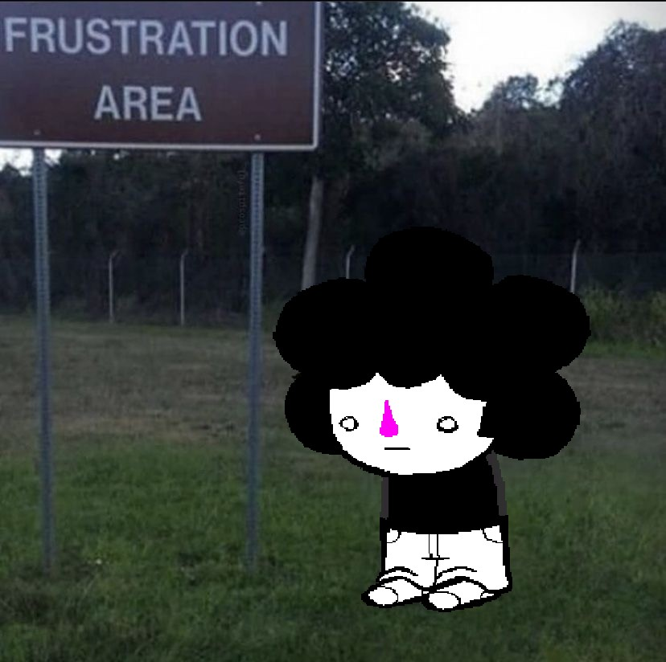

INTERVIEW:
Spooky
"spooky00boi"
(flashing lights warning)
nickyMaurice: "Ahem, Spooky. Let us begin, I'm sure everyone who will read this has no doubt heard of you, but for the sake of consistency, why don't you introduce yourself."
Spooky:
"Well if you insist
Hi I’m Spooky, I’m a artist, writer, spriter and I guess an animator now?
I work on a LOT OF STUFF, manily my own little stories but I do delve into the undertale au space…
as you’ve seen with my…well incredible work heh. I’ve been around for around a year now…
which is kind of a surprise…"
Q1:
How did we end up being blessed with a year of Spooky? What lead you to this place we call The LUKEISHA (Official Community Server)?
Spooky:
"Well back in my humble deviantart days, I was scrolling around the site during the hoildays, looking for some inspiration. I suddenly stumble upon Hypers account…
I think it was the roster of characters from HX STORYSHIFT…and honestly it was really cool and the design were amazing.
That’s when I looked around their account before finding out that they had a Discord server…and I guess that’s how I ended up here"
nickyMaurice:
"And why did you decide to linger, rather than keep scrolling?"
Spooky:
"Well the designs and ideas were amazing, the character design and little details that went into the characters was actually really cool…
it was really different from most storyshift aus I’ve seen and it actually had some really cool concepts to it, not to mention that it was just one au in the HX universe…in short…it was pretty sigma!"
Q2:
Who's your favorite? Not necessarily restricted to HX!STORYSHIFT of course.
Spooky:
"OuterShift Lycora ofc!"
Q3:
You're quite an artist yourself, always seems like your ideas come really naturally and you don't ever seem to break a sweat when it comes to drawing,
spriting, writing, ect. How do you find the motivation to keep constantly making new content and refurbishing old concepts?
Spooky:
"Well I guess I’ve always love drawing since I was younger…I guess it’s just stuck with me…But if I had to say why I never break a sweat?
I guess I’m constantly doodling and writing new things from time to time…I guess you could say I’m just built different heh, you could call me the next alpha…
And new content and stuff? Well I guess I’ve always been the creative type, I normally hyper fixated on one concept before moving onto the next
but I always manage to come back to old concepts that have been rotting in the back of my mind for however long and I’m constantly creating and designing new characters and stories,
I guess most of my stories and characters take ideas from things I’ve experienced in my own personal life and try to reflect on it in my work…"

nickyMaurice:
Okay next alpha(???) What would you be doing right now had you never joined the community? Do you think you'd still be creating?
Spooky:
"I probably would still be creating…but my aus wouldn’t be as good without the constant support and interest I’ve gotten with them, and that also includes the help with it!
(I’m talking to you Nicky!) but I also wouldn’t have experienced this amazing community and wouldn’t have met some certain people that I’ve become great friends with over the year…
also I guess the incident wouldn’t have happen but who cares about that! "
nickyMaurice:
the... incident...
(shivers)
(yelps like a small dog at thunder and scurries into my comically small doghouse)
Spooky:
"we don’t need to talk about that…"

Q4:
This next one's a heavy question, might have to strap in, if you're not reading this in a car with a seatbelt,
you may even have to adjust your posture slightly forward, that's how much focus this question requires.
Pancakes or Waffles?
Spooky:
"Paffles!"

(he sent this within seconds of the question being asked)
nickyMaurice:
"That was really fast, did... did you have that on deck..???"
Spooky:
"yep, always loved my paffles!"
nickyMaurice:
I'm baffled at the paffles.
Anything else you wanna tell the viewers at home? (Assuming if they were in a car with a seatbelt they have now safely made it back home)
Spooky:
"well humble viewers…I hope you enjoyed hearing this amazing interview with yours truely! …also before you go… WATCH MY LOSERS"
nickyMaurice:
CUT CUT CUT--
Spooky:
"Also this newsletter was helped by YOURS TRUELY I MADE SOME OF THE SPRITES I WANT CREDIT!!!!"
